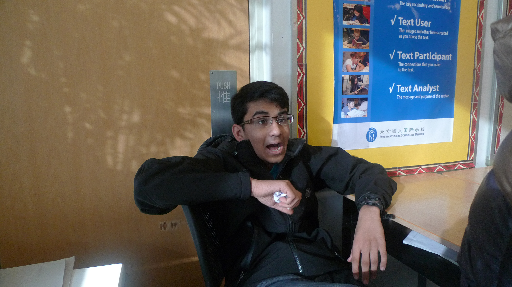

An exploration into the eccentricities of computers, humans, and their interactions.
This is the end of the world. Not time-wise, but in that nothing lies beyond this metaphysical boundary. Here lies a collection of random projects, scripts, and stuff — the stuff of the legends (at least in my mind). It never gets more useless than this.
A prime exemplar of my excellent photography
console.log("This is where you usually have code")
console.log("but who cares?")
console.log("oooooooooooooooooooooooooooooooooooooooooooooooooooooooooooooooooooooooooooooooooooooooooooooooooooooooooooooooooooooooooooooooooooooooooooooooooooooooooooooooooooooooooooooooooooooooooooooooooooooooooooooooooooooooooooooooooooooooooooooooooooooooooooooooooooooooooooooooooooooooooooooooooooooooooooooooooooooooooooooooooooooooooooooooooooooooooooooooooooooooooooooooooooooooooooooooooooooooooooooooooo")
This is the all-new renovated version of this website, utilizing the "Midnight" GitHub Pages theme by Matt Graham. The old website can still be accessed here.
Expect this area to be filled to the brim in the future. However, (sadly,) currently this section is quite bare. Soon...
I am the creator of this website, and (incidentally) the most amazing person to ever grace this land.